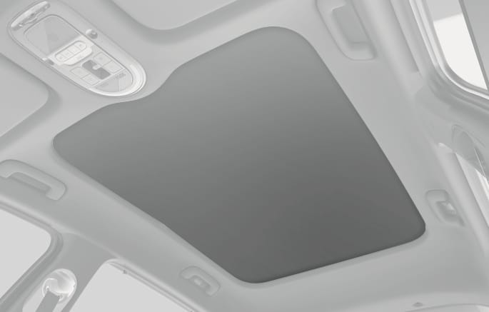

비전루프 사용하기
파워 선블라인드를 열면 비전루프(통유리 지붕)가 나옵니다. 비전루프를 통해 자연광을 쐬거나 주변 경관을 볼 수 있습니다.

2C_VisionroofOverview
-
차량이 정지한 상태로 비전루프를 조작하십시오. 주행 중에 비전루프를 조작하는 경우 운전자의 주의가 분산되어 사고가 발생할 수 있습니다.
-
차량을 잠시 떠날 때에도 시동을 끄고 키를 휴대해 어린이가 비전루프를 함부로 작동하지 못하도록 하십시오.
차량 지붕 위에 앉거나 무거운 물체를 올리면 비전루프가 손상될 수 있습니다.